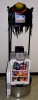

The Machine Intelligence Laboratory (MIL) provides a
synergistic environment dedicated to the study and
development of intelligent, autonomous robots. The
faculty and students associated with the laboratory
conduct research in the theory and realization of
machine intelligence covering topics such as machine
learning, real-time computer vision, statistical
modeling, robot kinematics, autonomous vehicles,
teleoperation and human interfaces, robot and
nonlinear control, computational intelligence,
neural networks, and general robotics. Applications
of MIL research include autonomous underwater
vehicles (AUVs), autonomous water surface vehicles
(ASVs), autonomous land vehicles, autonomous air
vehicles (AAVs including quadcopters and micro air
vehicles, MAVs) , swarm robots, humanoid robots, and
autonomous household robots.
MIL's
SubjuGator
is the three time champion autonomous submarine of
the RoboSub AUVSI/ONR underwater competition
(2005-2007), and placed in the top 3 in eleven of
the 21 years of the competition (including second
place in 2012, 2013 and 2014). MIL's
NaviGator AMS , won the the Maritime RobotX Challenge in Oahu,
Hawaii in 2016, our first time in this biennial
competition. In 2018, we earned forth place, again
in Oahu, Hawaii. We will next compete in the
Maritime RobotX Challenge in Sarasota, Florida in
November 2024. In 2013, MIL participated for the
first time in the RoboBoat AUVSI/ONR water surface
vechicle competition with our
PropaGator
robot boat; we won! In 2014, we earned second place
in the RoboBoat competition. We also won the static
division of the 2011 ION Robot Lawnmower competition
with MIL's
InstiGator
robot lawnmower.
In the fall of 2005, MIL physically moved next door
to
CIMAR
(The Center for Intelligent Machines and Robotics)
in the Mechanical and Aerospace Engineering
Department. We relocated our lab facilities and
faculty offices adjacent to the CIMAR labs and
offices in order to streamline our collaborations.
With MIL (from Electrical and Computer Engineering
Department) and CIMAR working together, the
possibilities are incredible. In 2016, we moved to
the adjacent building to the one that houses CIMAR.
In 2023, following construction of Malachowsky Hall,
we moved to our new lab space, MALA 3001 (about 500
feet from CIMAR).
MIL has always been, and will always be, strongly
committed to diversity, equity, and inclusion.
|
Announcements
-
The
NaviGator AMS , UF's autonomous maritime system won the 2016 Maritime
RobotX Challenge in Oahu, Hawaii. We will compete next
at the 2024 RobotX Challenge in Sarasota, Florida in
November, 2024.
-
The
SubjuGator , UF's autonomous underwater vehicle (i.e., submarine),
will compete next in the 25th International RoboSub
Competition in July-August 2024.
-
The
PropaGator , UF's autonomous boat, participated for the first time
in the 2013 AUVSI Foundation and ONR's 6th International
RoboBoat Competition in July, 2013. We won! In
2014, we earned second place in the 7th Annual RoboBoat
Competition in July, 2014. We are not sure when we will
next compete at this event.
-
The
InstiGator , UF's autonomous lawn mower, won first place in
the Static Division at the 8th Annual ION Robotic Lawn
Mower Competition on June 4th, 2011, in Beavercreek,
Ohio. This competition is no longer active.
-
The Urban NaviGator, our robot car created for the DARPA
Urban Grand Challenge, by UF and CIMAR/MIL's Team Gator
Nation.
-
Good Morning America (ABC) video
at UF from March 10, 2008 includes footage of our
Team Gator Nation DARPA Urban Challenge vehicle.
-
Proposal video
of our Team Gator Nation DARPA Urban Challenge
Entry.
-
A story about the DARPA Grand Challenge (which
included a CIMAR robot called NaviGATOR) was on the
Daily Planet on October 14, 2005. The
video segment can be seen here
(from the Discovery Channel website)..
-
SubjuGator video
for 2005-2006.
-
A story about MIL's SubjuGator was televised on
Discovery's The Science Channel (Cox Digital
Cable channel 101 in Gainesville) on Friday,
February 10, 2006 at 8pm and 11pm (EST) on a show
called Discoveries this Week. It also was
shown on Feb 10 at 11pm, on Feb 11 at 3am & 10am,
Feb 12 at 8pm & 11pm and on Feb 13 at 3am, 9am &
1pm. You can
watch this video here.
I'm sorry about the poor sound quality.
-
New to MIL? Join the MILers mailing list
here .
|
|

NaviGator AMS is an autonomous maritime system won the
2016 Maritime RobotX Challenge in Oahu, Hawaii. We
will compete next in the 2018 competition. NaviGator
ASV is an autonomous water surface vehicle designed on
a WAM-V platform and built by undergraduate and
graduate students.
|
|
|

SubjuGator is an autonomous underwater vehicle
designed and built by graduate and undergraduate
students of the Machine Intelligence Lab (MIL).
SubjuGator has competed twenty times in the RoboSub
competition, placing in the top 3 eleven times
including
first place in 2005, 2006 and 2007.
More
|
|
|
PropaGator
PropaGator is an autonomous water surface vehicle
designed and built by graduate and undergraduate
students of the Machine Intelligence Lab (MIL).
PropaGator competed for the first time in the AUVSI
Foundation and ONR's 6th International RoboBoat
Competition in July, 2013 and won! We earned second in
7th RoboBoat competition in July, 2014.
More>>
|
|
|
CongreGators
We are developing a swarm of air and ground vehicles,
starting with a heterogeneous group (presently three)
of hex- and quad-copters and 6 dune buggies...
More (soon?)>>
|
|
|
InstiGator
InstiGator is an autonomous lawn mower designed and
built by undergraduate and graduate students of the
Machine Intelligence Lab (MIL). InstiGator has
competed twice in Annual ION Robotic Lawn Mower
Competitions, earning a second place in 2010 and
first place in 2011 (both in the static
division).
More>>
|
|

|
Koolio
Koolio is a traveling autonomous refrigerator robot -
featured on MSNBC's
Countdown with Olbermann
on April 21st, 2004. It is designed to autonomously
deliver refreshments on demand (via the web).
Unfortunately, it only works in the 3rd floor of
Benton Hall at the University of Florida - which
happens to be thesfloor houses the Machine
Intelligence Lab...
More
|
|
|